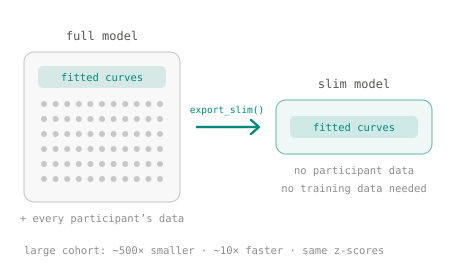

Capabilities
Built for the real shape of neuroimaging data
Figures are tutorial output on synthetic data.
Model the full distribution
Location, scale, skew and kurtosis fitted jointly as smooth functions of age, sex and site, in any GAMLSS family.

Reference curves and deviation scores
Age-dependent centile bands with uncertainty, and a Z-score for every individual against the reference.

Permutation testing
Non-parametric p-values for whether a covariate improves the fit, from a permuted null of AIC differences.

Model comparison, mapped onto the brain
Compare formulas across every parcel in parallel and project the result onto a cortical surface.

Site transfer without retraining
Recalibrate a reference model onto a new scanner from a small calibration sample, one site or several at once.

Diagnostics after every fit
Residual and Q–Q panels, R's worm plots and convergence checks after every fit.

Share models, not data
Export a copy of a fitted model with no participant data in it. Anyone can compute centiles and Z-scores from it; for a large cohort it is about 500× smaller and 10× faster.
